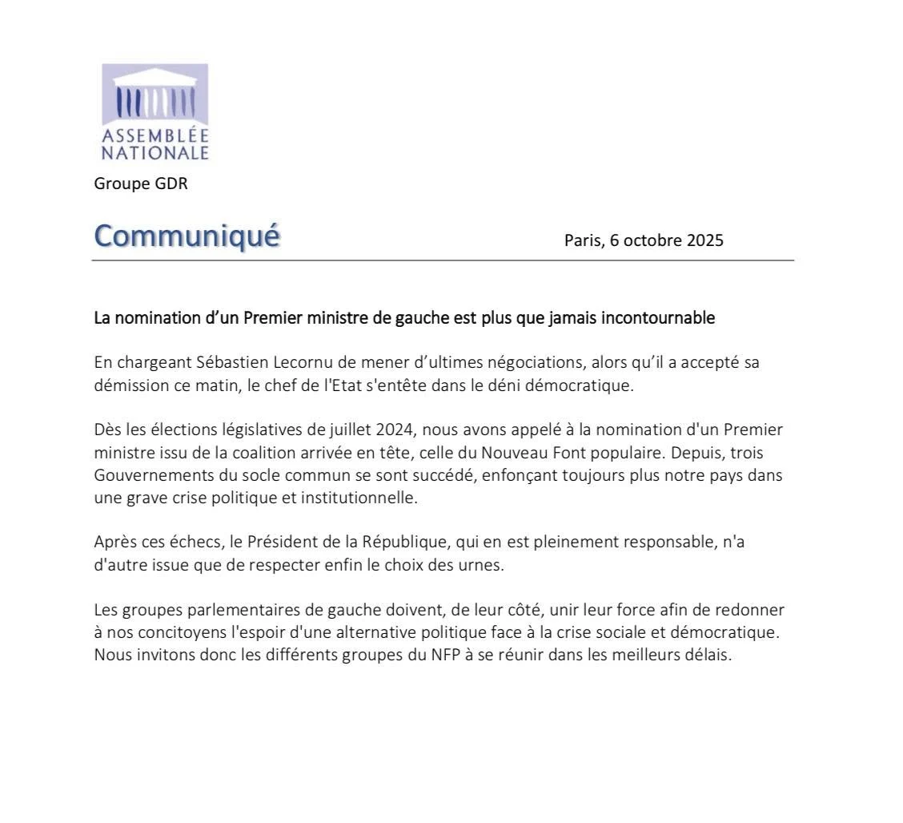

Publication relayée par le PCF 79
Les députés communistes réagissent à la démission de Sébastien Lecornu
Date de mise à jour indiquée par Facebook · 7 octobre 2025
Texte de la publication · Les députés communistes
Démission de Sebastien Lecornu : prendre ses responsabilités comme prétend le faire Emmanuel Macron, c’est nommer un Premier ministre de gauche !
Notre communiqué

Sources
Les députés communistes · publication relayée par le PCF 79 · bibliothèque Facebook · AR-0002-FB-00991
À lire aussi · Après la démission de Sébastien Lecornu, Fabien Roussel appelle à un gouvernement de gauche